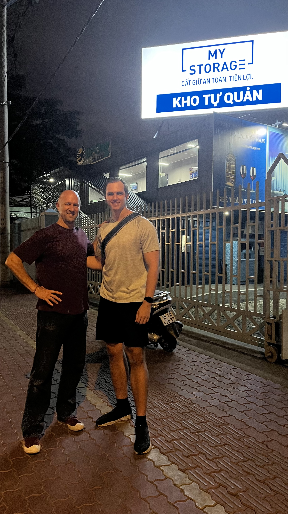
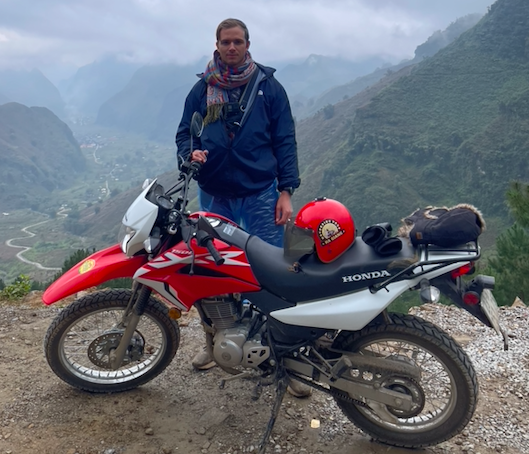

Scrolling through LinkedIn one day and I just so happened to stumble upon a post about MyStorage in Vietnam.
At the time, Aric Austin (CEO) made a post about looking for investors to expand operations there.
I was intrigued to say the least.
I decided to reach out and learn more about the business, operations, and growth trajectory. It was a convincing story as I knew how resilient the storage business can be. There were (and still are) very few competitors in the market. Those of which lacked technology, marketing, and an overall established brand.
What made MyStorage unique is the property itself is constructed with shipping containers which allows for more flexibility with the site layout. Containers are stacked, so a second floor is created along with climate control for some units.
After learning more about the business, I decided to invest in MyStorage and book a trip to Vietnam in January 2025. Previous to this trip, I visited Vietnam in December 2022 and spent a few days in Hanoi. One of the most memorable experiences was hiking Sapa (which is a famous mountain region) and exploring the Ha Giang Loop by motorcycle for New Years Eve.
The takeaway from this experience is to be open minded and observant to opportunities. LinkedIn especially can be a useful place to pick up on trends, gather insights, and make meaningful connections.

